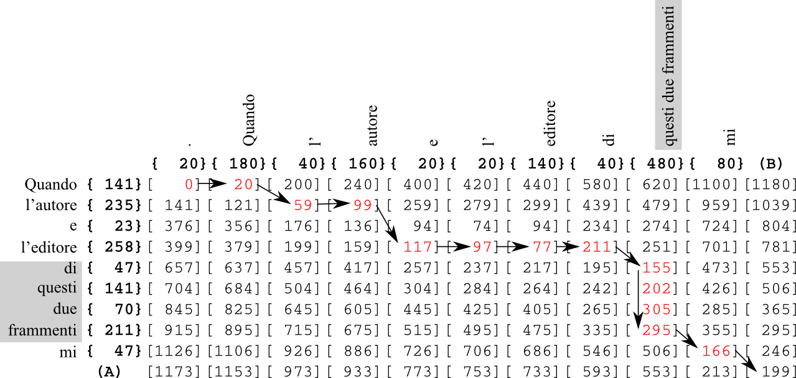

See: Description
| Class | Description |
|---|---|
| Matchup |
Align word-shapes with actual words.
|
| Enum | Description |
|---|---|
| Score |
Score types for new Positions
|
This package is an adaptation of Esko Ukkonen's diff algorithm in Information and Control 64, 100-118, 1985. Originally designed for the alignment of two sets of characters or strings, it is here adapted to the alignment of precise pixel-widths in an image and approximated pixel-widths in a text. The original algorithm found the optimal alignment between two texts using the insert, delete and exchange operations via a set of diagonals. This adaptation uses the same approach, but adds two new moves: h-extension and v-extension, which allows a number in one set to be aligned with more than one in the other set, so 25, 35 could be aligned with 60. This reflects the problem in recognising manuscript texts that sometimes two words are joined in the page-image, or one word split apart into two or more pieces. Using this method, and an existing transcription, shapes of words identified in the image can be aligned with the correct text, and the shapes themselves merged or split as needed.

This algorithm is central to the correct function of the TILT application.